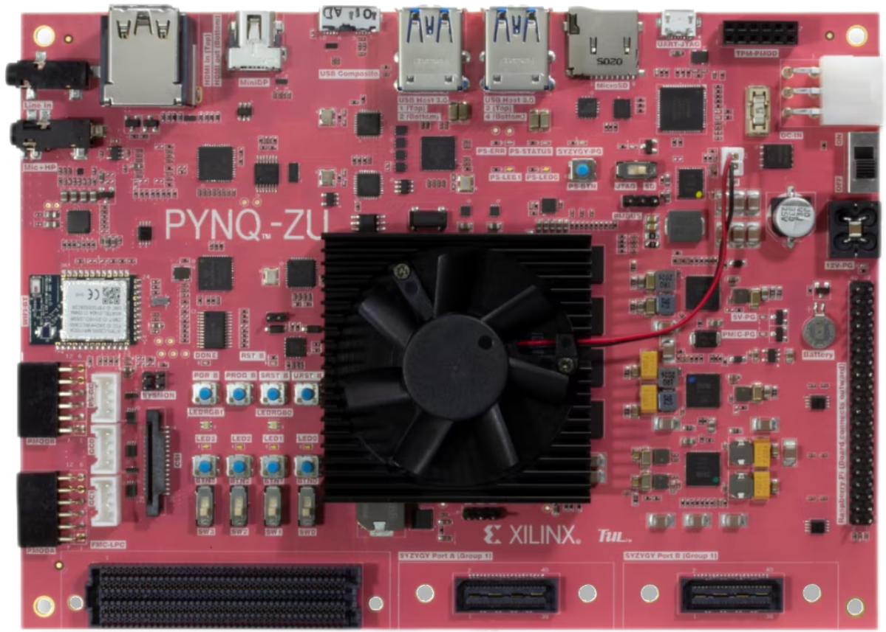
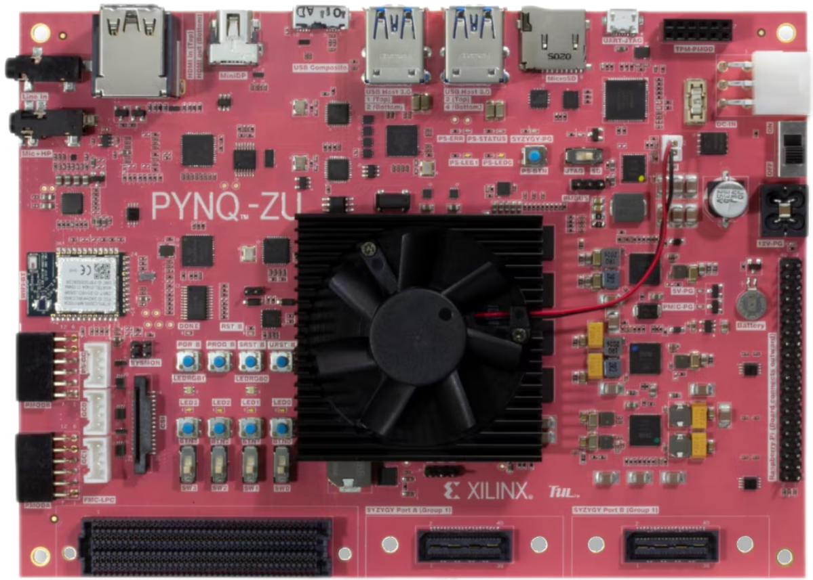

Recommended
Ryzen AI, selected AMD GPUS, and the following Academic
boards, Alveo and partner platforms are recommended.Platforms
Ryzen AI and selected GPUs
The AMD Radeon GPU is well know by gamers and can also be used
for general purpose compute, includingAI/ML. ROCm is an open
software stack that includes a broad set of programming models,
tools, compilers. libraries, and runtimes for Al and HPC
solution development on AMD GPUs can also be used for general
purpose compute, including Machine Learning. Anv Radeon
supported bv ROCm can be used for the competition.
Ryzen Al is a Neural Processing Unit or NPU, optimized for machine learning. Projects using Ryzen Al, founcinside selected Ryzen 7000 and 8000 processors are eligible for Open Hardware.
AMD Instinct™ accelerators are designed to deliver high-performance computing in data centers, catering to various scales, from single-server setups to the largest Exascale-class supercomputers. These accelerators excel in handling demanding artificial intelligence (AI) and high-performance computing (HPC) workloads, providing outstanding compute performance, substantial memory density, high bandwidth memory, and compatibility with specialized data formats. Projects using any AMD Instinct accelerators are eligible for Open Hardware.
The AMD Radeon GPU is well know by gamers and can also be used for general purpose compute, includingAI/ML. ROCm is an open software stack that includes a broad set of programming models, tools, compilers. libraries, and runtimes for Al and HPC solution development on AMD GPUs can also be used for general purpose compute, including Machine Learning. Anv Radeon supported bv ROCm can be used for the competition.
Ryzen Al is a Neural Processing Unit or NPU, optimized for machine learning. Projects using Ryzen Al, founcinside selected Ryzen 7000 and 8000 processors are eligible for Open Hardware.
AMD Instinct™ accelerators are designed to deliver high-performance computing in data centers, catering to various scales, from single-server setups to the largest Exascale-class supercomputers. These accelerators excel in handling demanding artificial intelligence (AI) and high-performance computing (HPC) workloads, providing outstanding compute performance, substantial memory density, high bandwidth memory, and compatibility with specialized data formats. Projects using any AMD Instinct accelerators are eligible for Open Hardware.

 
